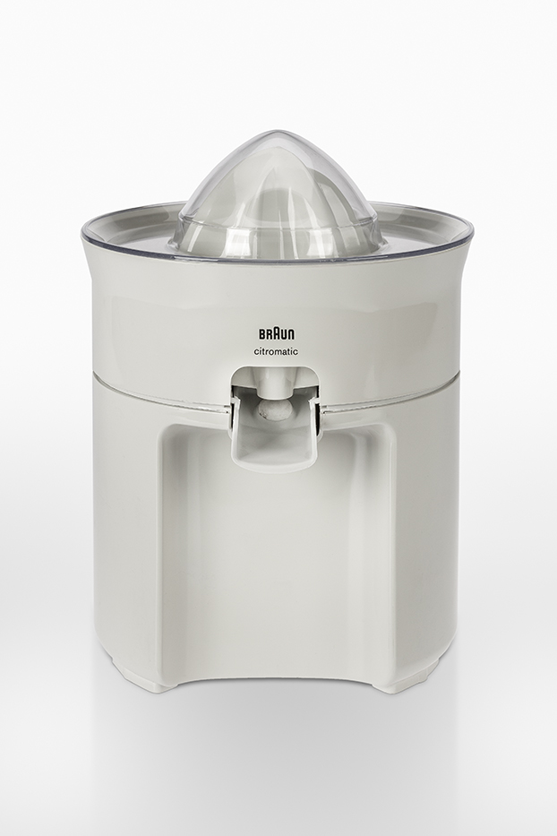
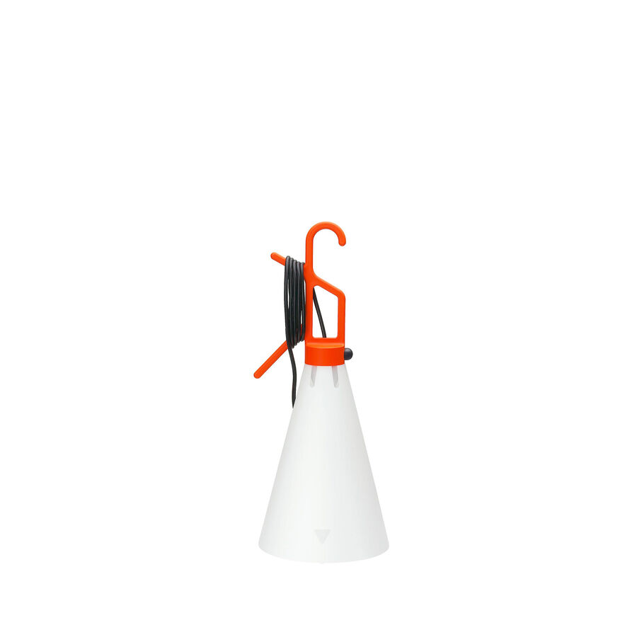

"Indifference towards people and the reality in which they live is actually the one and only cardinal sin in design." — Dieter Rams
Apple is known as one of the most design-conscious technology companies in the world. Early Apple wanted to create products that fit simply into people's lives. For example, the iPhone was originally designed to be used easily in one hand.
Steve Jobs himself received a lot of attention for being minimalist to an extreme degree. He was known for wearing the same clothes everyday, keeping his homes mostly empty, and walking around barefoot.

Jony Ive, Jobs' best friend and Apple's former Chief Design Officer, has spoken openly about his appreciation of Dieter Rams. Rams was an industrial designer for the consumer products company Braun. Many early Apple products draw direct comparisons to products made by Braun, and Rams received a thank-you letter along with an iPhone from Ive in 2010.

The Braun ET 55 calculator, badged with the Apple logo, was stocked in the Apple gift shop way back in 1982 and appeared in the 'Apple Collection' lifestyle catalogue in 1986/1987. This model later inspired the design for the calculator app.

In an interview with the Rams Foundation, Ive talks about the first Braun product he encountered in his parents' home, a juicer:
"I was a small boy. I wasn't particularly interested in its primary function. As much as I can remember I wasn't a big juicing fan. But there is something beguiling and seductive about objects that are single-purposed and that are mechanical. There is such a coherence in the object: its appearance, its construction, the materials of its construction and what it actually does. Now more than ever, products like that are extremely rare."

Rams defined what good design should look like in everyday objects:
"I wanted to make products whose appearance did not immediately command attention, but instead became more appealing through use and an enduring aesthetic."
Beauty isn't necessarily something that you are able to apply to any object. It comes when every aspect of an object comes together to complete its function. Another great example of this would be this lamp designed by Konstantin Grcic:

Nothing about this lamp is decorative but it's still unique and charming. Every decision was chosen based on function: a cone-shaped shade so it can sit on the ground, a hook so it can hang anywhere, two prongs for excess cord, a vibrant color so it can be found in the dark. It doesn't lean into what a lamp is supposed to be, it only exists to bring light to different places, which creates a beautiful form. A stationary lamp from Target or Walmart is the opposite — its form is created based on what people expect a lamp to look like, and then its function comes second to that.
In an interview Grcic talked about how everyone he had spoken to had different uses for the lamp in their everyday lives:
"It's a lamp that, even though it is quite specific, is more like an offering. It offers possibilities and people use it their own way."
The original iPhone is very similar in spirit. In the first few minutes of Apple's 2007 keynote, Jobs criticized the current phones and their lack of functionality:
"… smartphones are definitely a little smarter, but they actually are harder to use. They're really complicated. Just for the basic stuff people have a hard time figuring out how to use them. Well, we don't want to do either one of these things. What we want to do is make a leapfrog product that is way smarter than any mobile device has ever been and super-easy to use."